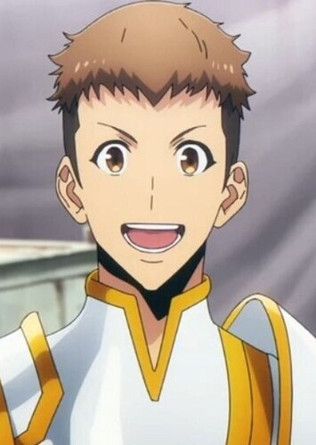

D-Rank Hunter · Jin-Woo's Vice Guild Master

Yoo Jin-ho is a D-Rank hunter and the son of a wealthy businessman, Yoo Myung-han, the chairman of the Yoojin Construction company. He first met Sung Jin-Woo during a dungeon raid and quickly became one of his most loyal and trusted companions. Despite coming from a rich family, Jin-ho chose to work hard alongside Jin-Woo rather than rely on his family's money and connections.
After witnessing Jin-Woo's incredible power and character, Jin-ho became deeply loyal to him and eventually became the Vice Guild Master of the Ahjin Guild — the guild that Jin-Woo created. He handles the business side of the guild, taking care of contracts, finances, and management so that Jin-Woo can focus on fighting.
As a D-Rank hunter, Yoo Jin-ho is not particularly powerful in combat compared to higher ranked hunters. However, he makes up for it with his hard work, determination, and business knowledge. He is smart, resourceful, and extremely reliable when it comes to managing the guild's operations. His loyalty and dedication make him far more valuable than his rank suggests.
Jin-ho is cheerful, enthusiastic, and endlessly loyal to Jin-Woo — whom he calls "hyung" (older brother) with great admiration and affection. He is one of the most genuinely warm and funny characters in the story, often providing lighthearted moments. Despite his sometimes comical personality, he is hardworking and sincere, and his friendship with Jin-Woo is one of the most heartfelt relationships in Solo Leveling.